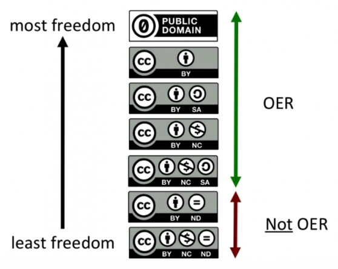

Strategi Lanjutan Pengadaan Sumber Pembelajaran Terbuka oleh Cable Green!

{kind=link}
Pendidikan Terbuka menjadi salah satu solusi yang baik di ranah pendidikan tingkat dasar hingga menengah maupun pendidikan tinggi (daring maupun luring.red) untuk membuat biaya pendidikan menjadi lebih terjangkau. Pengeluaran untuk membeli buku pelajaran merupakan salah satu beban finansial yang dirasakan oleh pelajar di seluruh dunia.
Pengadaan konten terbuka beserta alat-alat bantunya
Para pendidik membutuhkan dukungan untuk menggunakan, dan menciptakan suatu konten terbuka. Karena sebagian besar pendidik sudah terlalu sibuk dengan apa yang mereka kerjakan di institusi pendidikan tempat mereka bekerja, beberapa inisiatif berusaha memberikan solusi dengan menyediakan Sumber Pembelajaran Terbuka di situs-situs seperti OpenStax, dan Open Textbook Library. Dengan begitu para pendidik dapat mulai menciptakan sesuatu dengan memanfaatkan kembali Sumber Pembelajaran Terbuka yang tersedia. Setelah hal tersebut terwujud, yang diperlukan selanjutnya adalah perangkat-perangkat pendukung lain yang dapat menyokong produksi Sumber Pembelajaran Terbuka. Perangkat-perangkat ini dapat berupa sistem penilaian, atau alat pembantu untuk memudahkan guru dalam membuat analisis terkait perkembangan murid-muridnya yang menggunakan Sumber Pembelajaran Terbuka yang mereka buat. Kita harus dapat menggandeng pihak-pihak pengembang perangkat lunak, khususnya perangkat lunak terbuka, untuk menyempurnakan hal-hal tersebut.
Selain itu, ketika kita menerapkan lisensi terbuka pada sebuah materi pembelajaran terbuka, kita sebaiknya juga memastikan bahwa materi tersebut tersedia dalam format yang memudahkan akses penyuntingan. Materi-materi dalam format yang tertutup seperti PDF, berlawanan dengan prinsip keterbukaan akses tersebut. Materi-materi tersebut akan lebih bermanfaat jika tersedia dalam format yang memperbolehkan tindakan pengubahan, dan penggunaan kembali oleh orang lain. Penting untuk diperhatikan bahwa materi tersebut juga dapat dengan mudah diakses oleh orang-orang dengan kebutuhan khusus. Salah satu hal yang dapat dilakukan untuk mewujudkan hal ini adalah dengan menerapkan lisensi CC BY yang memperbolehkan penggunaan kembali suatu materi untuk tujuan apapun.
Salah satu alat bantu pembuatan konten terbuka yang dapat dijadikan percontohan adalah Pressbooks. Alat tersebut merupakan perangkat lunak berbasis sumber terbuka yang menyediakan materi pembelajaran terbuka dalam format HTML. Format tersebut memungkinkan tindakan penyuntingan, salah satu komponen terpenting dalam aktivitas penggunaan kembali. Hal-hal semacam ini memungkinkan kita menemukan jalan dalam menciptakan alat penyedia materi pembelajaran terbuka seperti GitHub pada perangkat lunak-perangkat lunak berbasis sumber terbuka. Karena, hal penting yang harus diperhatikan setelah menciptakan materi pembelajaran terbuka adalah bagaimana kita dapat menempatkan materi-materi tersebut di suatu tempat yang memudahkan praktek kontribusi sukarela. Kita memerlukan ruang di mana orang-orang dapat secara sukarela membangung, berbagi, memodifikasi, dan memperbarui suatu materi pembelajaran terbuka.
Praktek penyediaan materi pembelajaran terbuka Keberadaan materi pendidikan terbuka dapat memungkinkan para pendidik yang ingin membuat evaluasi besar-besaran pada suatu sistem pendidikan, termasuk sistem indikator keberhasilan, dan penilaian, dan hendak menggunakan buku-buku yang sama sekali baru pada kurikulum baru yang mereka buat. Sebagai contoh, salah satu hal yang menjadi tren di ranah Sumber Pembelajaran Terbuka adalah Z degrees, sebuah program gelar pendidikan bebas biaya yang berbasis sepenuhnya dari materi-materi pendidikan terbuka. Usaha-usaha untuk membakar batas yang ada di ranah pendidikan tradisional menjadi sautu sistem pendidikan terbuka hanya dapat terwujud dengan pemanfaatan Sumber Pembelajaran Terbuka. Dalam sistem pendidikan terbuka, bahkan para pelajar dapat turut serta membuat, atatu memperbarui materi pembelajaran yang mereka terima dari guru.
Sumber Pembelajaran merupakan salah satu hal yang diadakan oleh pemerintah suatu negara yang dibiayai oleh masyarakatnya melalui pembayaran pajak, atau model penghasilan negara lainnya. Creative Commons yang diwakili oleh Cable Green dalam setiap advokasi di ranah Sumber Pembelajaran Terbuka percaya bahwa segala hal yang dibiayai oleh publik harus tersedia untuk publik secara terbuka. Publik harus mendapatkan akses dari sesuatu yang mereka biayai. Entah itu dalam bentuk alat, data, atau sumber pembelajaran. Dalam hal ini Creative Commons telah menerbitkan buku pedoman praktis untuk juga membantu pemerintah dalam menciptakan, dan menerapkan ketentuan lisensi terbuka, termasuk untuk Sumber Pembelajaran Terbuka.

Saat menentukan pilihan lisensi terbuka, para pendidik sebaiknya memilih ketentuan yang paling bebas seperti yang dapat Anda lihat pada gambar di atas. Karena dalam bidang pendidikan, izin pemanfaatan kembali suatu materi merupakan hal yang paling penting. Para pendidik yang ingin berbagi dengan maksimal, sambil tetap memegang hak cipta atas sumber pembelajaran yang dibuat, dapat menerapkan lisensi CC BY. Karena ketentuan lisensi lain seperti lisensi CC BY-ND atau CC BY-NC-ND dapat menghalangi adanya pengubahan, dan penggubahan, hal ini bertentangan dengan prinsip Sumber Pembelajaran Terbuka. Pendidikan terbuka dan pandangan politik Pendidikan terbuka tidak terbatas untuk dianut oleh satu pandangan politik saja.
Orang-orang dengan paham konservatif melihat konten terbuka, khusunya materi pendidikan terbuka, sebagai imbal balik yang baik bagi orang-orang yang taat membayar pajak. Mereka percaya bahwa hal ini merupakan cara yang efisien dalam penggunaan anggaran negara. Mereka ingin anggota masyarakat mendapatkan pendidikan, menjadi mandiri, dan meningkatkan mutu kehidupan mereka serta orang-orang di sekitar mereka.
Orang-orang berpaham liberal atau progresif akan melihat hal ini sebagai isu keadilan sosial untuk menyediakan sumber pembelajaran bermutu bagi lebih banyak orang. Orang-orang ini akan melihat OER sebagai anugerah yang dapat membantu mereka yang kurang mampu. Hal ini dapat mengurangi biaya pendidikan, dan mengurangi kesenjangan pendapatan, yang salah satu penyebabnya adalah kesempatan untuk mendapatkan pendidikan.
Penerapan Sumber Pembelajaran Terbuka Daring di Indonesia
Penerapan prinsip Sumber Pembelajaran Terbuka yang kebanyakan bersifat daring, harus disesuaikan dengan data statistik pengguna internet di Indonesia. Menurut Asosiasi Penyelenggara Jasa Internet di Indonesia (APJII) hingga tahun 2016 jumlah pengguna internet di Indonesia mencapai angka 132,7 juta. Jumlah ini menyatakan bahwa terdapat lebih dari separuh penduduk Indonesia yang berjumlah 257,9 juta (Kemendagri). Di mana jumlah ini masih didominasi oleh pengguna dari Pulau Jawa sebanyak 86,3 juta (65%) pengguna. Angka ini menunjukan tidak meratanya jumlah pengguna internet di Indonesia, yang bisa disebabkan oleh dua hal, masyarakat yang merasa belum membutuhkannya, atau penyediaan koneksi internet yang belum merata. Pemerataan kesempatan untuk mengakses internet, khususnya untuk keperluan pendidikan, dapat memaksimalkan penerapan prinsip Sumber Pembelajaran Terbuka secara daring di Indonesia. Data lain menunjukan komposisi pengguna internet berdasarkan usia pengguna di Indonesia menunjukan bahwa jumlah pengguna internet dari rentang usia 10-24 tahun berada di posisi ketiga setelah rentang usia 35-44 tahun, dan 25-34 tahun. Berkaitan dengan hal tersebut, data tentang komposisi pengguna internet di Indonesia berdasarkan pekerjaan menunjukan bahwa pelajar, dan mahasiswa berada di peringkat tiga terbawah setelah kategori pekerjaan lainnya yaitu sebanyak 10,3 juta (7,8%), dan 8,3 juta (6,3%). Secara kasar dapat disimpulkan bahwa pengguna internet dari rentang usia 10-24 tahun diwakili oleh pengguna yang masih berstatus pelajar, dan mahasiswa. Melihat peringkat pengguna-pengguna tersebut masih berada di bawah pengguna lain secara kuantitas, terdapat kemungkinan bahwa tersedianya buku-buku pelajaran elektronik, misalnya Buku Sekolah Elektronik, masih belum maksimal apabila jumlah pengguna internet dari kategori pelajar, dan mahasiswa berada di peringkat tersebut. Institusi pendidikan masih harus meningkatkan pemanfaatan sistem pembelajaran daring kepada pelajar, dan mahasiswa untuk kemudian mengarahkan mereka pada iklim pendidikan terbuka, yang menyediakan sumber pembelajaran terbuka, misalnya dapat dimulai dengan memanfaatkan sumber-sumber terbuka seperti Wikipedia, atau pengadaan buku pelajaran elektronik yang lebih menarik bagi pelajar, dan mahasiswa. Banyaknya jumlah pengguna internet yang memanfaatkan telepon pintar di Indonesia, sebanyak 63,1 juta (47,6%), juga dapat menjadi salah satu pertimbangan untuk menyediakan Sumber Pembelajaran Terbuka yang ramah seluler.
Artikel ini merupakan hasil terjemahan yang telah dimodifikasi dari artikel berjudul “Are textbooks in or out? The state of open educational resources” oleh Don Watkins, opensource.com, CC BY-SA
Tags:
Oleh: Hilman Fathoni
20 Mar 2017Kategori:
Berita Terbaru
- Lokakarya Hak Cipta dan Lisensi Creative Commons di Pekanbaru
- Pengumuman Resmi: Hasil Akhir Training of Trainers Creative Commons Indonesia
- Literatur tentang Model Bisnis Terbuka "Made With CC"
- Data dan Artikel Ilmiah Terbuka dari PLOS!
- Konten Format Model 3 Dimensi Berilsensi CC di Platform Sketchfab